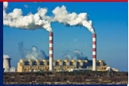
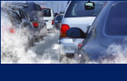
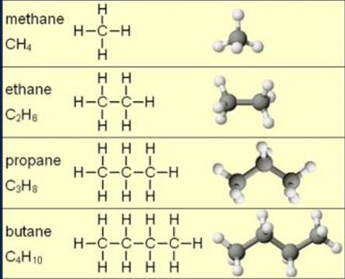
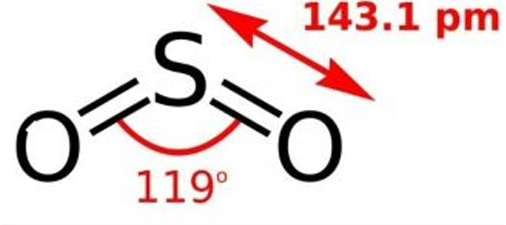
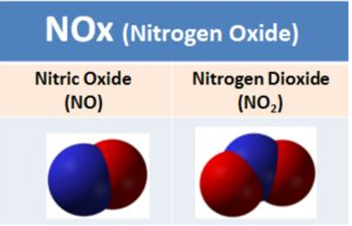
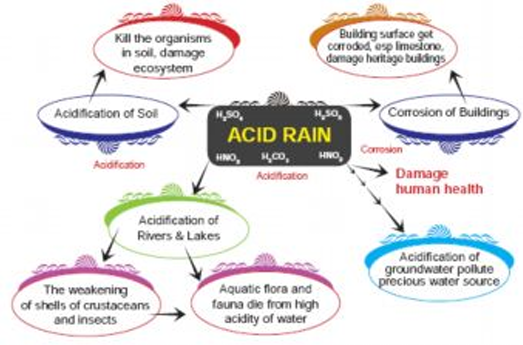
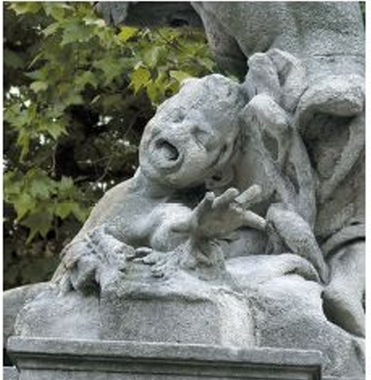

Pollution is an undesirable change in
physical, chemical and biological
characteristics of our land, air or water
caused by excessive accumulation of
pollutants (i.e. Substances which cause
pollution).
The pollution is of four major types namely
air pollution, water pollution, land
pollution and noise pollution.
In terms of origin it may be natural or anthropogenic (man-made).


Degradation of air quality and natural
atmospheric condition constitute air
pollution. The air pollutant may be a gas or
particulate matter.
Particulate matter - it comprises of small
suspended particles such as soot, dust, pesticides,
etc., and biological agents such as spores, pollen
and dust mites. It causes respiratory ailments such
as asthma, chronic bronchitis, etc
Carbon monoxide - is a product of incomplete
combustion of fossil fuels in automobiles. It is
highly poisonous to most animals. When inhaled,
carbon monoxide reduces the oxygen carrying
capacity of blood.



Hydrocarbons - hydrocarbons such as methane,
are evolved from soil microbes (methanogens) in
flooded rice fields and swamps. They are also
generated during the burning of coal and petroleum
products
Sulphur dioxide - is released from oil refineries
and ore smelters which use the sulphur containing
fuels. It causes harmful effects on plants and animals.
It causes chlorosis (loss of chlorophyll) and necrosis
(localised death of tissues). In human, it causes health
problemssuch as asthma, bronchitis and emphysema.
Nitrogen oxides - It causes reddish brown haze
(brown air) in traffic congested city air which
contributesto heart and lung problems.



Smog is a mixture of
smoke and fog. It is formed in the atmosphere
under the influence of sunlight by the
photochemical reactions of hydrocarbons, oxides
of nitrogen and oxygen, resulting in the formation
ofPAN(Peroxy Acetyl Nitrate)
Damages the chlorophyll and thus reduces
photosynthesis and growth. It also causes acute
irritation of eyes and throat. Visibility of the
surroundingis reduced due to smog.
Gases such as Sulphur di oxide and
Nitrogen oxides are oxidized to form sulphuric and
nitric acids along with water, and precipitate as
acid rain. It damages building materials, plants and
animals. It also makes the soil acidic.

